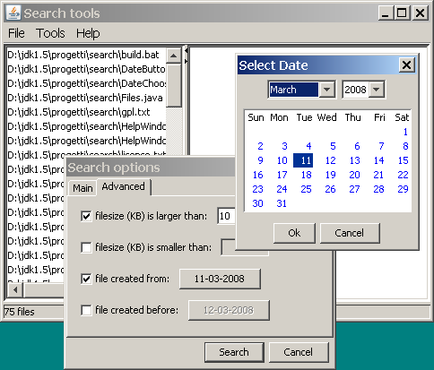

[Main Index]
User Interface
This program creates a splitted window with a menu. The left part of the window contains the list of files that met the search conditions.
The right part of the window shows additional information.
A status bar is present in the bottom part of the window, showing useful status information.
From the application menu it is possible to open the search dialog box and select other featurs, including the help.
The following picture shows the search tools window:

[Main Index]